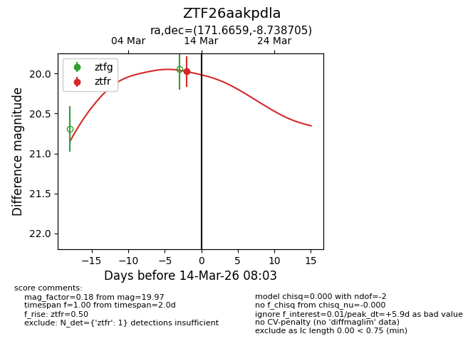
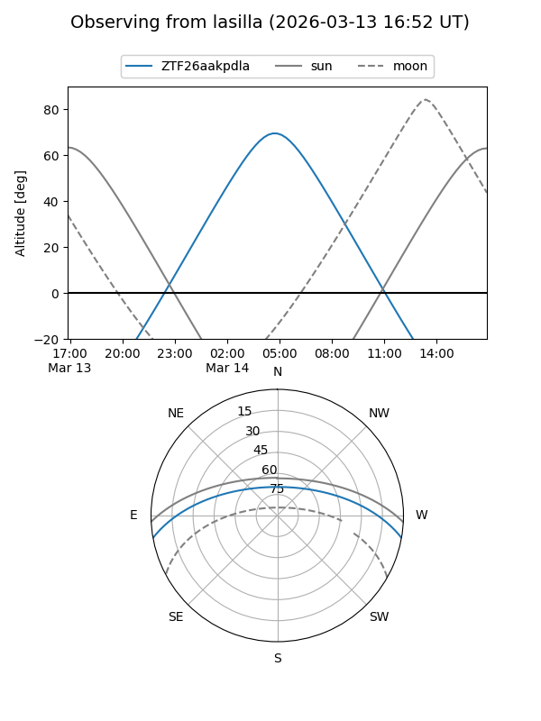
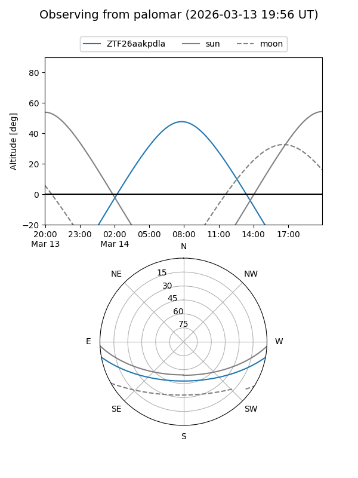
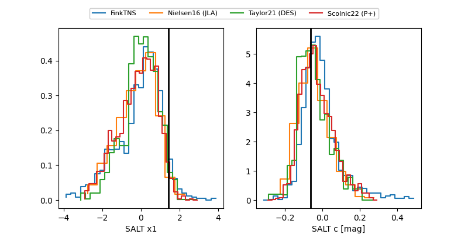

ZTF26aakpdla
Target ZTF26aakpdla at 2026-03-14 08:05
Aliases and brokers:
FINK: link
Lasair: link
ALeRCE: link
alt names
ZTF26aakpdla (ztf,fink_ztf)
Coordinates:
equatorial (ra, dec) = 171.6659,-8.73871
equatorial (HMS+DMS) = 11:26:39.82,-08:44:19.34
galactic (l, b) = (270.1773,+48.66698)
Flags:
Photometry:
last ztfr=19.97
1 ztfr detections
Lightcurve

Visibility


Additional plots
